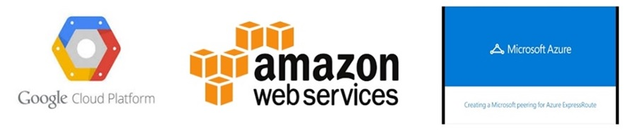
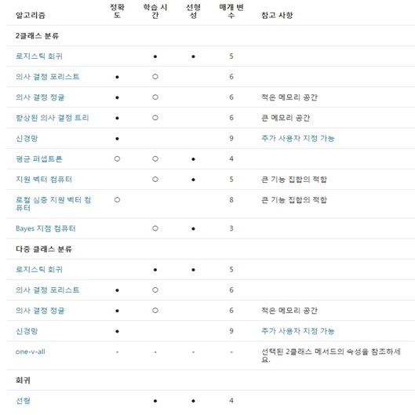

영화제목과 비슷한 이 글 제목에 제맘대로 붙힌 클라우드 빅3는 AWS, Azure, GCP를 말하는 것입니다. 아시다시피 IaaS(Infrastructure as a Service)의
현재 3대장이다. 사실 이 3대장 말고도 여기저기 IaaS 서비스를 제공하는 곳은 많지만 결국은 이 3개 서비스만 남을 가능성이 높다. 다른 곳과의 기술격차,
규모, 네임벨류 등을 따져보면 그렇다는 것이다. 사실 본 토픽의 주제는 이게 아니므로 이 쯤에서 접고 이 3대장들이 자사의 서비스내에서 제공하는
머신러닝(Machine Learning) 분야를 살펴보겠습니다.
아마존웹서비스(AWS)는 시장점유율1위의 선두주자로써 2015년 4월경에 출시했으며 상대적으로 다른 회사의 제품에 비해 제공되는 기능 및 알고리즘이
아직 제한적이다. 고객에게서 더 많은 수요가 있다면, 시간이 지남에 따라 서비스가 발전 할 것이라고 생각한다.
AWS 머신러닝에는 각 단계를 안내하는 마법사가 있으므로 "머신러닝 지식이 없는 개발자도 시작할 수 있습니다" 라고 안내 하고 있으나
지식이 없으면 어떻게 한다는건가 의문스럽다. 외워서 하나?? 사실 이말은 정말 그대로 '광고성' 글이다. (소년이여 빡시게 공부하세요~~)
AWS 머신러닝은 Redshift, S3 등의 AWS 플랫폼에서 사용 가능한 데이터 소스를 지원하므로 AWS 머신러닝을 사용하기 전에 데이터를 AWS로 옮겨야하지만
기존 AWS를 사용하고 있는 고객 인 경우에는 더 편한 환경일 것이다. 사실 AWS 기사용 고객들이 이용할 만한 서비스이지 이 것을 위해
AWS를 사용하겠다고 덥석 들어오는 고객은 별로 없을 것이다. 말 그대로 아직까진 AWS 머신러닝은 부차적인 서비스이기 때문이다.
AWS 머신러닝은 기본적인 데이터 정리 및 변환 작업을 지원하지만 결국 AWS 기능이 아닌 다른 도구나 소프트웨어로 데이터의 정제/가공/마이그레이션 등의
작업이 필요해 보인다.
AWS 머신러닝은 현재 다음 머신러닝 알고리즘을 지원합니다.
회귀 분석 (Regression)
이진 및 다중 클래스 분류 (Binary and Multi-class classification)
AWS 머신러닝은 개발자가 문제의 알고리즘을 직접 선택할 수 없습니다. 예를 들어 바이너리 분류 문제가있는 경우 자동으로 Logistic Regression 알고리즘을 사용합니다.
알고리즘을 Two-class SVM 또는 Two-class decision forest와 같은 것으로 변경시키지 않습니다.
각 알고리즘에 대해 몇 가지 교육 및 평가 매개 변수를 설정할 수 있지만 제한적이다.
AWS 머신러닝은 모델 성능을 평가할 수있는 일반적인 성능 메트릭을 제공하는데 예를 들어, 바이너리 분류 모델을 작성하는 경우 이진 AUC를 제공합니다.
글쓴이의 생각은 AWS 머신러닝은 아직까지는 기존 고객들에게 부가서비스 개념으로 제공한다는 수준인거 같다. 물론 아마존의 놀라운 능력을 감안하면
또 놀라운 업그레이드를 보여줄 수 도 있을 것입니다.
Microsoft Azure ML은 2015년 2월에 서비스를 시작했습니다. 아마존 ML과 같이 비교적 젊은 제품이지만 기능이 풍부한 제품입니다!
초보자부터 고급 사용자까지 다양하고 유용한 기능이 있다는데요? 방금 시작한 초급 사용자 및 중급 또는 베테랑 고급 사용자를 위해
도움이되는 워크 플로가 있으며 R 및 Python, C# 등으로 샘플코드를 생성한다. Azure 머신러닝은 초보자가 Azure 머신러닝을 사용하여
첫 번째 머신러닝 프로젝트를 쉽게 따라갈 수있는 워크 플로와 시각적 편집기가 있습니다.
Azure 머신러닝은 CSV, SQL 데이터베이스 테이블, RData 등과 같은 데이터 소스를 지원하고 일반적인 데이터 정리 및 변환 작업이 있거나
R을 사용하여 데이터 파이프 라인을 만들 수도 있습니다
Azure 머신러닝은 다음과 같은 마이닝모델을 지원합니다.
이진 및 다중 클래스 분류 (Binary & Multiclass classification)
회귀 분석 (Regression)
클러스터링 (Clustering)
권장 사항 (Recommendations)
이상 탐지 (Anomaly detection)
각 문제마다 Azure 머신러닝은 여러 알고리즘을 시도 할 수 있는 옵션을 제공합니다. R 또는 IPyhton에서 지원되는 다른 알고리즘을 가져올 수도 있습니다.
또한 각 알고리즘의 매개 변수를 조정하는 데 도움도 줍니다. 실제로 각 알고리즘 매개 변수에 대한 여러 입력 옵션을 반복하고
문제에 대한 최적의 매개 변수 설정을 식별하는 "스윕 매개 변수" 라는 작업도 있답니다.
그리고 머신러닝을 사용하면 다른 알고리즘의 성능을 쉽게 비교할 수 있으며 문제의 해결에 가장 적합한 알고리즘을 선택할 수도 있습니다!
또한 R 및 Pyhton, C#을 지원하므로 기존 R / Python 코드로도 이식 할 수 있으며 Azure Platform을 사용하여 기계 학습 프로젝트를 운영 할 수 있습니다

사실 Azure의 경우 머신러닝 도큐먼트 페이지도 한글화 되어있다. ^^ 하지만 AWS는 쎄울(seoul)리전은 지원하지 않는다는 문장을 바로
볼 수 있을 것이다. 여러분도 그렇고 저도 그렇고 웬지 한글문서 페이지가 없다는거에 대해서 서운하지 않나요?
(성의 문제잖아 성우우우우의~~) 도큐먼트에는 알고리즘별 특징과 장단점도 기술되어 있어 머신러닝을 공부하는 분들이면 이런 부분도
꽤 도움이 된다고 할 수 있다. 그럼 Azure를 뒤로하고 세계 최대 IT기업인 구글을 살펴보자.
구글은 지난 2016년 3월경 미국 샌프란시스코에서 '구글 클라우드 플랫폼(google cloud platform) 넥스트' 행사에서 '클라우드 머신러닝'
서비스를 발표합니다. 서비스의 이용방법은 개발자가 머신러닝 모델을 자신의 데이터로 개발하는 것과 구글이 미리 학습시킨 모델을 사용하는 것이다.
머신러닝 모델을 학습시키는 데에는 상당한 컴퓨팅 파워가 필요한 만큼 개발자는 구글 클라우드 데이터플로(Google Cloud Dataflow),
구글 빅쿼리(Google BigQuery), 구글 클라우드 데이터프로(Google Cloud Dataproc), 구글 클라우드 스토리지(Google Cloud Storage),
구글 클라우드 데이터랩(Google Cloud Datalab) 같은 도구에서 얻은 데이터를 사용할 수 있다.
구글의 유명한 3대 머신러닝 Open API인...
Google Translate API
Google Speech API
Google Cloud vision API
이 들은 python, node.js 등의 도구로 쉽게 사용할 수 있는걸 보여주었지만, 이 들의 유명세인지 GCP(google cloud platform)에서의
머신러닝 활용은 덜 알려져 있다. 글쓴이도 제대로 아는게 없다. (모른다고 하니 글쓰는게 편하네요. 흐흐흐 ^^)
구글 클라우드 플랫폼은 활용 목적에 맞는 빅데이터 분석과 이 것을 머신러닝 모델로 설계 및 관리하며 손쉽게 이용할 수 있는 형태로
제공하는 게 목표라고 밝히고 있다. 구글은 또한 텐서플로우(Tensorflow) 같은 오픈소스 도구를 제공해 파문(?)을 일으키고 있다.
(공부할 거리만 늘어나는 것이다. -_-;;)
사실 점유율3위는 여기 언급된 3대장에 끼지 못한 IBM 이다. IBM은 왓슨으로 유명세를 갖고 있다.
다만 왓슨(watson)이 유명하니 다른게 눈에 들어오지 않는다게 단점(?)이다. IBM은 블루믹스(Bluemix) PaaS 아래 여러 머신러닝 기반 서비스를 출시했다.
기상 예측, 언어 분석 시스템, 이미지 인식 시스템, 언어 번역, 감성 및 톤(tone) 분석을 예로 들 수 있다. 역시 남들 다 하는 것들이다.
IBM의 광고를 보면 클라우드를 기반으로 머신 인텔리전스를 제공하는 기업 중에 가장 야심찬 기술 목록을 보유한 기업이 바로 IBM이란다.
무엇보다 IBM은 '그림의 떡'과 같은 수준의 도구를 상대적으로 현실적인 도구를 통해 구현하려는 노력을 기울이고 있다고 하는데
사실 개발자 입장에선 웬지 아직 '그림의 떡' 인거 같다. 하지만 IBM이 최근에 의료분야에서 암환자 진단 시 왓슨을 보조 조언자로 두고
진료를 하는 다큐멘터리를 봤는데 곧 왓슨의 어마어마한 파급력을 직접 체험할 수 있지 않을까 한다.
To be continued..